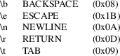
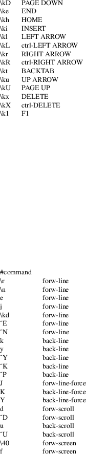
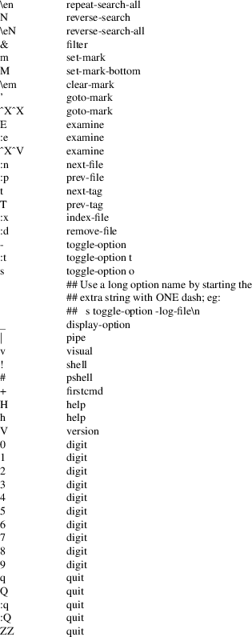
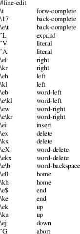
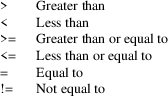

lesskey − customize key bindings for less
lesskey
[−o output] [−−] [input]
lesskey [−−output=output] [−−]
[input]
lesskey −V
lesskey −−version
This document describes the format of the lesskey source file, which is used by less version 582 and later. In previous versions of less, a separate program called lesskey was used to compile the lesskey source file into a format understood by less. This compilation step is no longer required and the lesskey program is therefore deprecated, although the file format remains supported by less itself.
A lesskey file specifies a set of key bindings and environment variables to be used by subsequent invocations of less.
The input file
consists of one or more sections. Each section starts
with a line that identifies the type of section. Possible
sections are:
#command
Customizes command key bindings.
#line-edit
Customizes line-editing key bindings.
|
#env |
Defines environment variables. |
Blank lines and lines which start with a pound sign (#) are ignored, except as noted below.
The command section begins with the line
#command
If the command section is the first section in the file, this line may be omitted. The command section consists of lines of the form:
string <whitespace> action [extra-string] <newline>
Whitespace is any sequence of one or more spaces and/or tabs. The string is the command key(s) which invoke the action. The string may be a single command key, or a sequence of up to 15 keys. The action is the name of the less action, from the list below. The characters in the string may appear literally, or be prefixed by a caret to indicate a control key. A backslash followed by one to three octal digits may be used to specify a character by its octal value. A backslash followed by certain characters specifies input characters as follows:

\k followed by a single character represents the char(s) produced when one of these keys is pressed:

A backslash followed by any other character indicates that character is to be taken literally. Characters which must be preceded by backslash include caret, space, tab and the backslash itself.
An action may be followed by an "extra" string. When such a command is entered while running less, the action is performed, and then the extra string is parsed, just as if it were typed in to less. This feature can be used in certain cases to extend the functionality of a command. For example, see the "{" and ":t" commands in the example below. The extra string has a special meaning for the "quit" action: when less quits, the first character of the extra string is used as its exit status.
The following input file describes the set of default command keys used by less. Documentation on each command can be found in the man page, under the key sequence which invokes the command.

Commands specified by lesskey take precedence over the default commands. A default command key may be disabled by including it in the input file with the action "invalid". Alternatively, a key may be defined to do nothing by using the action "noaction". "noaction" is similar to "invalid", but less will give an error beep for an "invalid" command, but not for a "noaction" command. In addition, ALL default commands may be disabled by adding this control line to the input file:
#stop
This will cause all default commands to be ignored. The #stop line should be the last line in that section of the file.
Be aware that #stop can be dangerous. Since all default commands are disabled, you must provide sufficient commands before the #stop line to enable all necessary actions. For example, failure to provide a "quit" command can lead to frustration.
The line-editing section begins with the line:
#line-edit
This section specifies new key bindings for the line editing commands, in a manner similar to the way key bindings for ordinary commands are specified in the #command section. The line-editing section consists of a list of keys and actions, one per line as in the example below.
The following input file describes the set of default line-editing keys used by less:

The environment variable section begins with the line
#env
Following this line is a list of environment variable assignments. Each line consists of an environment variable name, an equals sign (=) and the value to be assigned to the environment variable. White space before and after the equals sign is ignored. Variables assigned in this way are visible only to less. If a variable is specified in the system environment and also in a lesskey file, the value in the lesskey file takes precedence.
If the variable name is followed by += rather than =, the string is appended to the variable’s existing value. This currently works only if any += lines immediately follow the same variable’s original definition (with an = line), without any intervening definitions of other variables. It can append only to a variable defined earlier in the file; it cannot append to a variable in the system environment.
If a line begins with #version followed by a relational operator and a version number, the remainder of the line is parsed if and only if the running version of less (or lesskey) matches the operator. This can be helpful if a lesskey file is used by different versions of less.
For example, suppose that a new command named ’sideways-search’ is added in less version 777. Then the following line would assign the command to the Q key, but only in versions of less which support it. The line would be ignored by versions earlier than 777.
#version >= 777 Q sideways-search
These six operators are supported:

The #version feature is not supported in less and lesskey before version 594. In those older versions, all #version lines are ignored.
The following input file sets the −i and −S options when is run and, on version 595 and higher, adds a −−color option.
#env
|
LESS = −i −S |
||
|
#version >= 595 LESS += −−color=Hkc |
less(1)
On MS-DOS and OS/2 systems, certain keys send a sequence of characters which start with a NUL character (0). This NUL character should be represented as \340 in a lesskey file.
Copyright (C) 1984-2023 Mark Nudelman
less is part of the GNU project and is free software. You can redistribute it and/or modify it under the terms of either (1) the GNU General Public License as published by the Free Software Foundation; or (2) the Less License. See the file README in the less distribution for more details regarding redistribution. You should have received a copy of the GNU General Public License along with the source for less; see the file COPYING. If not, write to the Free Software Foundation, 59 Temple Place, Suite 330, Boston, MA 02111-1307, USA. You should also have received a copy of the Less License; see the file LICENSE.
less is distributed in the hope that it will be useful, but WITHOUT ANY WARRANTY; without even the implied warranty of MERCHANTABILITY or FITNESS FOR A PARTICULAR PURPOSE. See the GNU General Public License for more details.
Mark Nudelman
Report bugs at https://github.com/gwsw/less/issues.